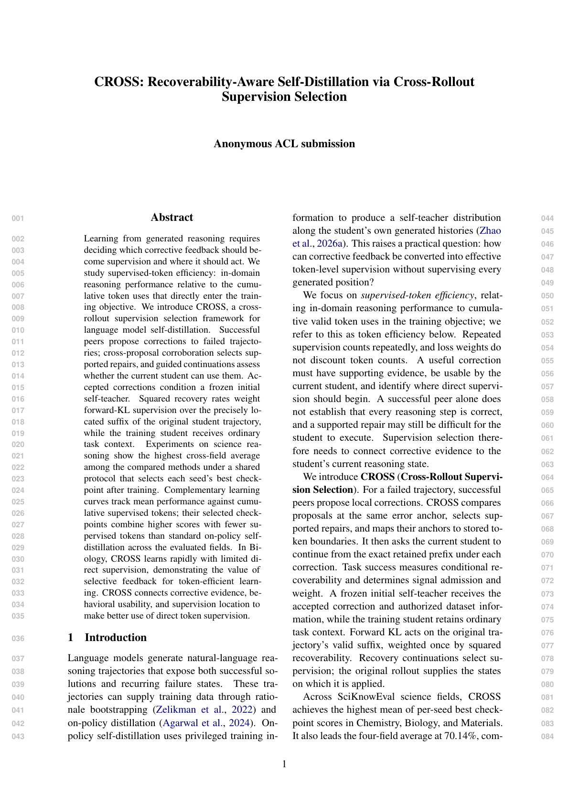

Research paper
CROSS: Recoverability-Aware Self-Distillation via Cross-Rollout Supervision Selection
Under review at ARR
CROSS turns a model’s own diverse reasoning trajectories into structured corrective supervision by identifying erroneous trajectories and extracting evidence-supported local corrections. It verifies and precisely localizes each correction, then evaluates whether the current student can actually recover from the identified error when given that corrective information. These verified and recoverable signals are compiled into localized token-level self-distillation objectives, concentrating learning on informative reasoning errors instead of indiscriminately distilling entire trajectories.
